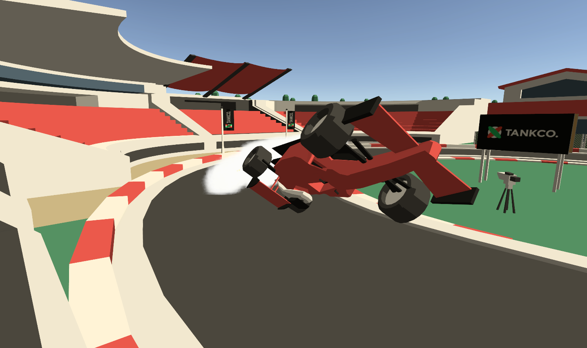
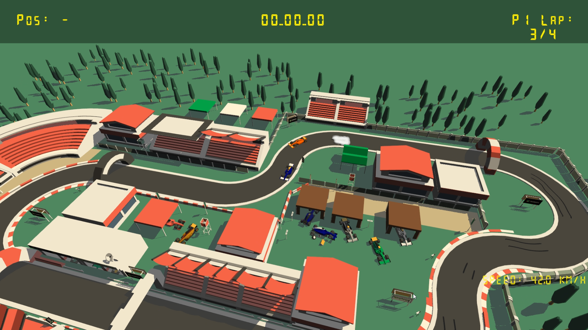

Overview
Tiny Vroom is a fast-paced miniature racing game inspired by the classic Carrera GO! slot-car tracks. Developed as a personal project, it blends nostalgia with a modern arcade feel, putting players in control of tiny cars speeding through colorful, cartoon-style circuits.
As a solo developer, I am responsible for the entire technical implementation, from the core driving systems to the UI/UX and audio integration. The project is currently at version 0.5 and continues to evolve with frequent updates.
Technical Implementation
Driving & Movement
Implemented a full driving system featuring spline-based movement combined with physics for a "slot-car" yet dynamic feel. Includes custom turbo, acceleration, and drift behavior.
Multiplayer & Input
Robust local multiplayer logic supporting shared-screen races and flexible input handling (Keyboard & Controllers).
AI Prototypes
Developed adaptive AI opponents that use track data to adjust their speed and behavior, providing a challenging single-player experience.
VFX & Audio
Interactive smoke and particle effects that react to driving style (skids, drifts). Improved engine audio system for better immersion.
Screenshots


Key Features
- Master the throttle to stay on the track and beat lap times.
- Local multiplayer head-to-head racing.
- Turbo mechanics for high-speed bursts.
- HUD with position tracking and best lap system.
- Complete settings menu and polished UI/UX.